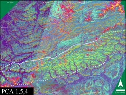
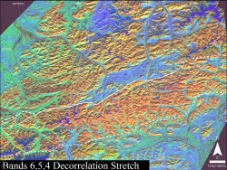
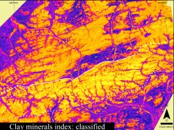
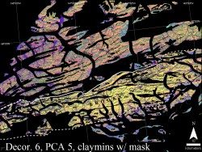

The Brooks Range is composed of seven allochthons stacked on parautochthonous rocks of the North Slope. The boundary between the northernmost edge of the lowest allochthon, the Endicott Mountains allochthon, is near the boundary between the northern and northeastern Brooks Range, but it has not been adequately mapped in the field. Three Landsat 7 ETM images from August 2000 were mosaiced and analyzed in order to observe lithologic changes that could be indicative of the allochthon-parautochthon boundary
 A distinct change in spectral signature from north to south was observed in several of the processed images, including the principal component images, decorrelation stretch images, and clay minerals index image. The fifth principal component image derived from a PC analysis of a the visible and infrared bands of Landsat ETM data, was found to be useful in identifying the lithological differences. In the false color composite shown here, this fifth PC band is coded in green.
 When decorrelation stretch was performed on the same image set, differences in rock type become clearer. A clear difference is visible across the white solid and dashed boundary. Solid to dashed line shows the possible allochthon - parautochthon boundary; entirely dashed line shows southern lithologic boundary. Compared to the standard false color composite, the decorrelation stretch images contain a lot more detail on surface lithology of the area.
 In an attempt to further discriminate sbtle lithological variations, a clay index image was generated and color coded. In teh color coded image shown here, lighter yellow colors represent low clay mineral values, and darker blue colors represent high clay mineral values. A careful manipulation of this image to change the boundaries between various tones helped to bring out and subtle differences in the clay minerals contents in the study area. This digital manipulation was based on trial-and-error guiding by field knowledge of the study area and by comparing the results with other processed images such as the decorrelation stretch images and PC images.
 Each of the above three processed images highlighted lithological differences to different degrees. The final image used for mapping the allochthon - parautochthon boundary was a false color composite generated by coding the above three processed images in red, green and blue. A mask was applied on this final image so that teh spectral signatures of only the Lisburne Group carbonates were visible, to highlight teh fact that changes in the spectral signature were indeed within the Lisburne Group and are not misinterpreted due to visual contamination from other spectral sources.
These observed changes provide useful starting points for future fieldwork. Tremendous potential exists for further stratigraphic and structural mapping using these images.